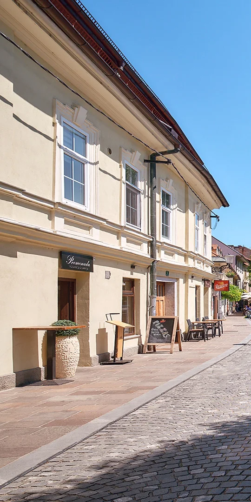
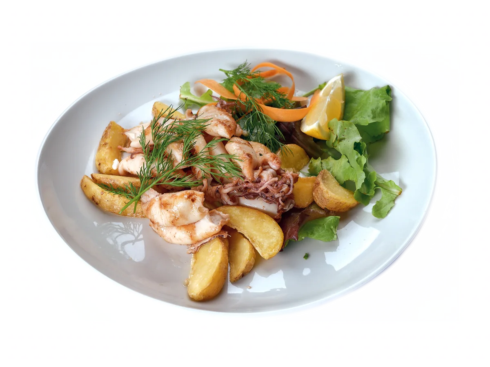
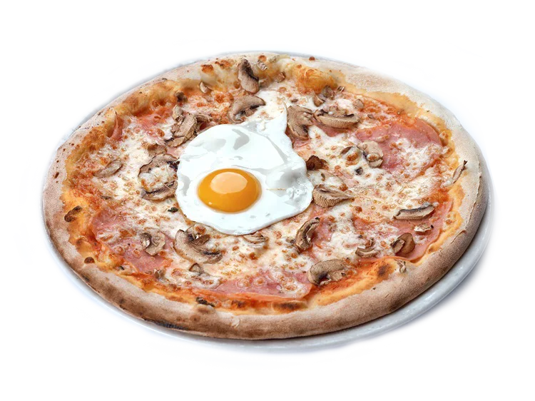

Petkovškovo nabrežje 9, Ljubljana
Terasa ob Ljubljanici, pod Ljubljanskim gradom.
Restavracija in pizzerija v središču Ljubljane. Pizze, testenine, rižote, ribe in jedi z žara, pa miza na nabrežju, kjer se reka vidi s stola.


Senčniki na terasi ob Ljubljanici
Kaj kuhamo
Od pizze iz pizzerije do rib in žara.

Meso in žar
Biftek, rostbif, piščančji file, hišna plošča za dva

Testenine in rižote
Široki rezanci, njoki, tortelini, tri rižote

Ribje jedi
Brancin na žaru, kalamari na žaru ali ocvrti

Pizze
Klasične in gurme pizze, med njimi pizza Promenada

Bar in kava
Tudi samo za kavo ali kozarec.
Ni treba, da pridete lačni. Bar v notranjosti in mize na nabrežju so tu tudi za kavo, pijačo ali sladico po sprehodu ob reki.
Po navedbah restavracije: vina slovenskih vinarjev in hišne sladice.
O restavraciji
Odlična hrana v centru mesta.
Tako so svojo restavracijo opisali sami. Promenada je restavracija, pizzerija in kavarna na Petkovškovem nabrežju, na pešpoti ob Ljubljanici in pod gradom. Po navedbah podjetja v središču Ljubljane deluje že več kot deset let.
Pridite z družino, s sodelavci na kosilo ali na večerjo za dva. Večje mize in ploščo za dva se splača rezervirati vnaprej.
Pripeljite družino! Rezervirajte si mizo.Vabilo z njihove spletne strani
Kje smo in rezervacije
- Naslov
- Petkovškovo nabrežje 9, 1000 Ljubljana
- Telefon
- +386 40 516 308
- E-pošta
- info@restavracija-promenada.si
- Rezervacije
- Pokličite ali pišite; za večje skupine povejte število oseb in uro.
Ta podatek vpišemo po vaših navodilih; na predogledu ga namerno ne ugibamo.